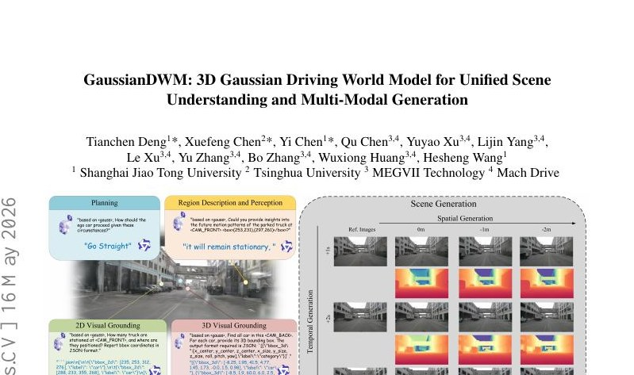
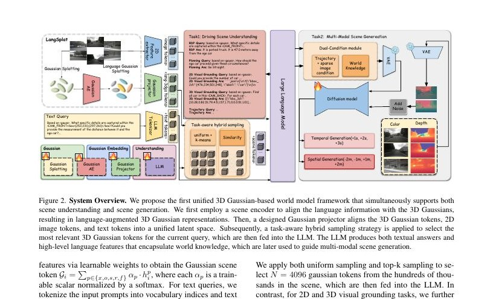
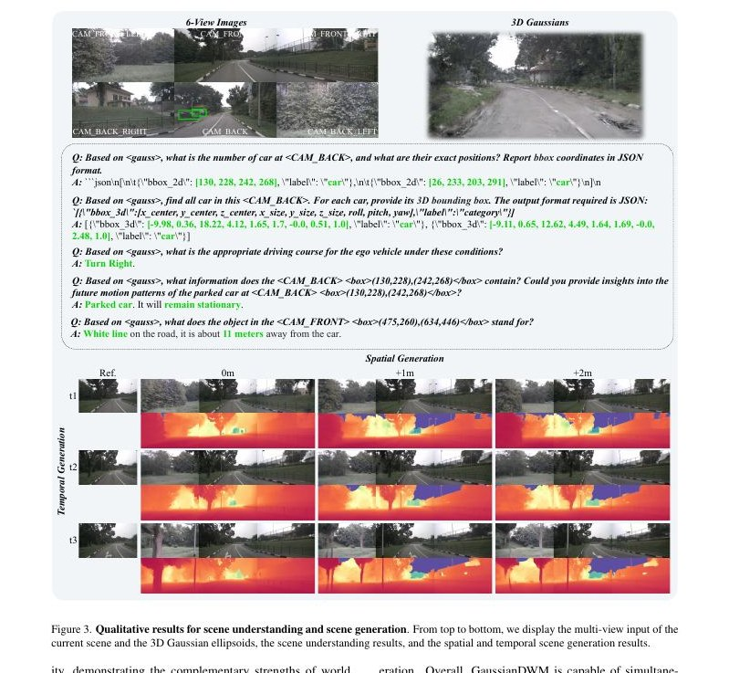

本译文对应 GaussianDWM: 3D Gaussian Driving World Model for Unified Scene Understanding and Multi-Modal Generation，arXiv:2512.23180v3（2026-05-16），并合并 CVPR 2026 官方补充材料。主论文 12 页、补充材料 7 页，共 19 页。参考文献列表不翻译；正文引用编号保持原样。
| 主论文 | 补充材料 |
|---|---|
| 摘要；1 引言；2 相关工作；3 方法（3.1–3.3）；4 实验（4.1–4.5）；5 结论 | A 概览；B 数据集细节；C 实现细节；D 消融实验；E 扩展实验 |
覆盖核验：方法、训练、实验、消融、结论、数据处理、QA/轨迹格式、参数效率和补充实验均已纳入；参考文献除外。公式、表号、图号与关键数值按选定版本保留。
随着生成模型的发展，驾驶世界模型（Driving World Models，DWMs）正在快速演进。然而，现有 DWM 缺乏三维场景理解能力：它们只能依据输入条件生成内容，却不能解释或推理驾驶环境。与此同时，现有方法通常以点云或鸟瞰图（BEV）特征表示三维空间，难以把文本信息与底层三维场景精确对齐。
为解决这些问题，我们提出一种以 3D Gaussian 场景表示为基础的统一 DWM 框架，同时支持三维场景理解与多模态场景生成，并为两类任务提供丰富的上下文。方法把语义特征直接嵌入每个 Gaussian primitive（高斯基元），使文本与三维场景在早期完成模态对齐；随后使用任务感知、语言引导的采样策略删除冗余 Gaussian，并向大语言模型注入准确而紧凑的三维 token。
我们进一步设计双条件多模态生成模型：视觉—语言模型提取的世界知识作为高层语言条件，图像/几何特征作为低层条件，共同引导 RGB、深度与未来场景生成。在 nuScenes 与 NuInteract 上的广泛实验验证了该框架的有效性。作者报告该方法在场景理解与多种生成设置上取得有竞争力的领先结果，并公开代码。

驾驶世界模型能够预测环境变化并合成仿真数据，因此可用于风险预判、路线优化和长尾场景训练。现有方法通常预测图像或点云等模态，较好地描述环境的视觉与几何属性，但它们很难解释、描述或查询场景，也不容易提供视觉问答、场景描述等上下文信息。大型语言模型和视觉—语言模型在通用视觉任务中展现出的世界知识和因果推理能力，表明把 VLM 的理解能力与 DWM 的生成能力结合起来是一条有前景的路线。
HERMES [80]、UniFuture [38] 等先驱工作使用 BEV/深度特征表示空间信息，把其对齐至文本空间并输入生成模型。但 BEV 路线主要完成特征层的文本—空间对齐，粒度仍不够精确。本文转而使用 3DGS：把语言特征写入每个 Gaussian，显式对应三维位置、外观和语义。由于一个场景包含数万甚至更多 Gaussian，直接把它们都作为 LLM token 不可行；因此，方法计算查询文本与 Gaussian 语义的相似度，只保留与当前任务最相关的 token，再用投影器映射到 LLM 上下文空间。
生成部分使用双条件设计。VLM 的理解结果提供高层语义和世界知识，参考图像、深度和稀疏几何控制提供低层结构条件。两者共同约束生成器，使其能够完成 RGB-D 新视角生成、视点平移和未来时间预测。本文的主要贡献为：
GaussianDWM 的输入包括多视图图像 {Iᵢ}、Gaussian 椭球 {Gᵢ} 和查询文本 {tᵢ}。系统由世界 tokenizer、场景理解和多模态场景生成三个模块组成。

3D Gaussian Tokenizer。系统以当前多视图观测构建连续 3D Gaussian 场景。每个 Gaussian 额外携带语言嵌入 fᵢ；这些嵌入来自 CLIP 特征，并继承 SAM 分层分割得到的语义。语言特征沿标准 alpha compositing 渲染：
其中 F(v) 是像素 v 的语言嵌入，αᵢ=oᵢGᵢ2D(v)，oᵢ 是第 i 个 Gaussian 的不透明度，Gᵢ2D 是该 Gaussian 投影到图像平面的响应。为降低显存，场景级语言自动编码器 E 把 F(v)∈Rᴰ 压缩为 H(v)=E(F(v))∈Rᵈ；本文取 D=512、d=3，并学习解码器 Ψ 恢复 512 维 CLIP 特征。
3D Gaussian 投影器。每个基元写为 Gᵢ=(xᵢ,oᵢ,sᵢ,rᵢ,fᵢ)：三维位置、opacity、scale、rotation 和语言特征。坐标使用可学习 Fourier embedding：
opacity 经 sigmoid 限制到 [0,1]；压缩语言特征由 Ψ 解码为 512 维。位置、不透明度、尺度、旋转和语言分别经 MLP 投到共同的 4096 维空间，再融合为 Gaussian token。公开实现接收 14 维输入：xyz 3 + scale 3 + rotation 4 + opacity 1 + compressed language 3。
任务感知语言引导采样。所有 Gaussian 直接进入 LLM 会造成巨大 token 冗余。方法先把查询文本和 Gaussian 的语言特征归一化，在 CLIP 空间计算余弦相似度，保留 top-k 相关基元；再辅以均匀/交叉注意力采样，兼顾任务相关性和全局覆盖。被选中的 Gaussian 隐状态写入提示中的特殊 <gauss> token 位置。
Tᵢ 是文本/视觉提示，Gᵢ 是压缩后的三维 token，tᵢ 是回答 token，Cᵢᴸ 是可供生成器使用的高层语言条件。训练使用 prefix language modeling：
损失只监督目标答案，梯度更新 Gaussian 投影/采样模块以及 LoRA 等可训练参数。QA 涵盖区域描述与感知（RDP）、2D/3D visual grounding 和规划。
生成器接收两类条件：参考图像/深度、相机轨迹或稀疏投影提供低层几何；LLM/VLM 的文本 token 提供高层物体、属性、动作和常识。两类 token 增加类型嵌入后合并为 cross-attention 的 encoder hidden states。模型使用 RGB-D 联合 latent，训练时对带噪目标学习速度场：
dₜ 是时刻 t 的带噪 RGB-D latent，dref 是参考 latent，CI、CD、CL 分别为图像、深度/布局和语言条件，s 表示时间/噪声标量。论文描述采用 simulation-free rectified flow 与 v-prediction；公开代码则实现 EDM 风格的 σ 采样、预条件和加权 MSE，二者不应混为一谈。
场景理解在 NuInteract 上评测 RDP、2DVG、3DVG 和规划；扩展实验还覆盖 OmniDrive。生成实验在 nuScenes 场景上评估空间视点平移与时间预测。生成质量采用 FID/FVD，理解采用 BLEU、ROUGE-L、CIDEr、mAP、F1、mIoU、precision 和规划准确率。
理解骨干基于 Qwen3-8B，Gaussian 语言场以 LangSplat 风格构建。训练分三阶段：先独立训练 Gaussian tokenizer、投影器和采样策略；再与 LLM 联合，用 LoRA 微调；随后训练多模态生成器，并进行端到端联合优化。生成器从 224×400 RGB 视频开始，扩展到低分辨率 RGB-D，最终以混合帧长策略训练 424×800 RGB-D。训练使用 16 张 NVIDIA A100。
| 模型/设置 | RDP BLEU | ROUGE-L | CIDEr | 2DVG mAP/F1/mIoU | 3DVG Pr/mAP/F1 | 规划 Acc | 平均 |
|---|---|---|---|---|---|---|---|
| GaussianDWM | 68.78 | 81.06 | 78.72 | 34.95 / 40.49 / 71.85 | 50.66 / 52.78 / 32.05 | 80.95 | 59.23 |
| DriveMonkey | 论文表中对应多任务基线 | 52.12 | |||||
GaussianDWM 的 NuInteract 平均分为 59.23，DriveMonkey 为 52.12，相对提升约 13.6%。这说明显式三维语义对齐和任务相关采样对混合问答/定位任务有效，但不同子任务的提升幅度并不相同。
| 视点平移 | FID↓ | FVD↓ |
|---|---|---|
| ±1 m | 8.36 | 44.50 |
| ±2 m | 11.27 | 68.17 |
| ±4 m | 18.81 | 116.40 |
随着目标视点偏移增大，生成难度明显上升。GaussianDWM 在 ±1 m 和 ±2 m 下表现强劲；在 ±4 m 下，DiST-S 的 17.57/105.29 更好，因此“所有设置都绝对最优”并不准确。

| 设置 | 平均分 |
|---|---|
| 微调、无 Gaussian | 53.32 |
| 随机采样 | 55.21 |
| Top-k + Uniform | 58.93 |
| + 相似度/任务感知采样 | 59.23 |
补充材料进一步显示：使用交叉注意力采样时，512 个 token 的平均分 58.26，高于 4096 个 dense baseline 的 56.92；更少但更相关的 token 比无差别密集输入更有效。世界知识对大视点平移更重要，但在 30 个场景子集上的结果也显示，仅加入 Gaussian 并不保证每个 FVD 指标继续改善。
本文提出 GaussianDWM，以语言增强的 3D Gaussian 作为统一世界表示，把驾驶场景理解与多模态生成连接起来。世界 tokenizer 提供显式空间—语义对应，任务感知采样解决 Gaussian 数量与 LLM 上下文长度之间的冲突，双条件生成器则把高层世界知识和低层几何控制结合起来。实验支持其在多任务理解与多个新视角/未来生成设置中的有效性。
局限包括：构建每个场景的语言 Gaussian 有额外离线成本；系统依赖上游 3DGS/CLIP/SAM 与相机标定质量；长时动态、罕见交互和开放环生成误差仍可能累积；训练需要较大算力；统一指标改善不意味着规划安全性已得到闭环验证。
补充材料给出数据处理、训练细节、Gaussian 加载策略、参数效率、世界知识注入、额外消融与定性结果。其目标是解释如何把论文中的 3D 语义表示、QA 数据和 RGB-D 生成流程落到可训练系统中。
作者从 nuScenes 处理 800 个场景，使用多视图图像和相机信息构建 Gaussian 场景。语言场先提取 SAM 分层区域与 CLIP 特征，再以场景级自动编码器压缩。自动编码器的重建目标为：
之后，3D 语言 Gaussian 在压缩的场景特定 latent 空间内学习，而不是直接拟合 512 维 CLIP 空间：
s、p、w 表示不同层级/尺度的语义监督，d 是距离函数。场景级先验使语言维度从 512 压到 3，显著降低 Gaussian 存储和读取成本。
每条 QA 样本记录场景/帧索引、任务类别、问题—答案对、图像路径、所需相机视角和 Gaussian 特征路径。为符合 Qwen-VL 的训练范式，Gaussian 注释及 <gauss> 占位放在指令开头。RDP 问题可询问目标距离，2D/3D grounding 返回 bounding box，规划问题返回驾驶动作。
空间生成问题例如“向左平移 2 m 后生成视图”，LLM 先预测目标相机位姿，点云投影得到稀疏低层条件。时间生成问题例如“预测 1 秒后的场景”，LLM 预测未来相机轨迹，同样投影为生成条件。每个视频片段取 10 帧：前 4 帧是提示，后 6 帧是预测目标；所有轨迹变换到第 5 帧 ego 坐标系。
第一阶段训练 Gaussian tokenizer、投影器和采样模块并接入 LLM；LLM 用 LoRA 微调。第二阶段依次训练低分辨率 RGB、低分辨率 RGB-D 和高分辨率 RGB-D 生成器。第三阶段端到端联合优化全部组件，强化理解与生成的一致性。
需要环视信息的 QA 加载六个摄像头视角的 Gaussian，并沿 token 维拼接；单视角问题只加载对应视角的 Gaussian。这样既保持统一输入接口，也避免把无关视角全部塞入上下文。
不同任务按收敛难度使用不同 epoch 数。第一阶段可训练参数只占总参数的 0.45%，LoRA 阶段占 0.79%；大部分语言和视觉骨干保持冻结，主要训练投影、采样、融合与低秩适配器。
自然语言 caption 经预训练文本编码器生成逐 token 的 Etext∈Rᴸˣᴰ；参考帧产生 Eimg。系统为不同模态增加类型嵌入并拼接 Eenc=[Eimg;Etext]+Etype，作为生成网络多层 cross-attention 的 encoder hidden states。逐词 token 保留物体类别、属性与动作，比单个 pooled 向量更适合选择性注意；低层 RGB/depth 保留局部结构，高层文本提供场景语义与常识。
| 采样 | Gaussian token | 平均↑ |
|---|---|---|
| Top-k + Uniform + Cross | 128 | 58.15 |
| Top-k + Uniform + Cross | 512 | 58.26 |
| Top-k + Uniform | 4096 | 56.92 |
| Top-k + Uniform + Cross | 4096 | 57.70 |
512 token 达到最优平均分，说明 learned sampling 能用八分之一 token 捕获关键内容。世界知识/Gaussian 消融在 30 个 nuScenes 场景上显示：无两者时 ±4 m FID 为 21.79；加入世界知识后为 19.02；再加入 Gaussian 后为 18.91。语义帮助在大偏移时更明显。
OmniDrive 数据集上，GaussianDWM 与 GPT-4o、LLaVA-OV、OmniDrive 和 HERMES 比较。理解指标为 METEOR 0.395、ROUGE-L 0.341、CIDEr 0.712。METEOR/ROUGE-L 最高，但 CIDEr 低于 separated unification 的 0.745 和 HERMES 的 0.741，因此应逐指标阅读，不能把表述简化为“所有指标第一”。
补充材料还展示六视角 3D Gaussian 问答、2D/3D bounding box、规划动作，以及空间/时间 RGB-D 生成案例。定性结果说明同一世界表示能支撑理解和生成；但这些案例不是闭环驾驶复现，也不能替代真实交通安全评测。